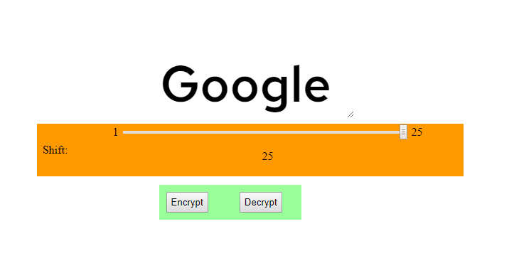
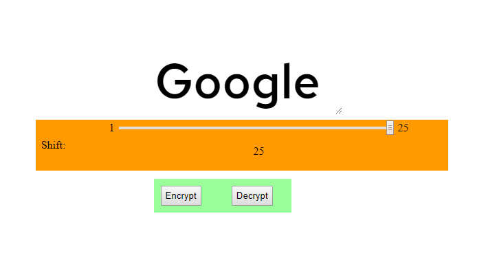
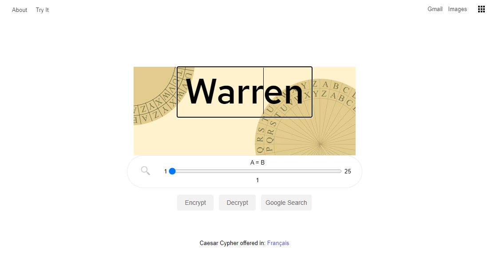

In Late 2019 I was tasked with designing a new Google Doodle. I could make it about anything I wanted. This was supposed to be a group project, actually, but I ended up working alone on it. In the end I made what you see above; a Doodle for the Caesarian Shift.
Define
I had so many ideas for this project that I ended up prototyping three different Doodles, including the final Doodle.
I started with these mind maps, to try and group my ideas into certain categories and see which I wanted to move forward with. At first I placed them into smaller categories (games, cyphers and musicals), but I then placed those categories into bigger ones to capture a broader image of what I was trying to make.


Ideate


The gallery above showcases the different sketches I ran through to test different ideas. The ones I ended up prototyping were 'Kirby' (no.5) and 'Game Freak' (no.12). Unfortunately, I overwrote the Game Freak files with the Kirby files and only ended up saving the one .GIF, view it here! Kirby and the star were supposed to be the 'oo' in Google.
{kind=link}
Prototype & Test
 

With a clear direction and something to work from, I began to think about how I was going to code this. Naively, as every programmer does, I thought 'Oh, this won't be that hard to code. It's just some simple JavaScript.'
Famous last words.
Not only did I have to add 26 different 'switch amounts' to display depending on which shift the user chose, I had to dismantle and modify the code tutourial I'd found to have it be able to work with my slider. You can see how terrible it looked before I could put some kind of CSS on it (img 1 > img 2). But alas, such is the life of code. You have to make sure it works before you make it pretty.
The Final Piece
Finally, finally, after adding some decent CSS and slaving over the JavaScript, it was done. It looked close enough to the original Google homepage and it actually worked.
Okay, so what does it do and how does it work?
When users load up the page, they're met with a slider from 1 to 25, 'encrypt' and 'decrpyt' buttons, and a deceptively hidden text box. Yes, the 'Google' ('Zhhzex,' in this case) is actually a text box! I designed it this way to give the site more interactivity and playability for users. You can put whatever you like in there using your keyboard!

Users can move the slider to change how much the Cypher will shift the letters - a shift of 1 using the 'encrpyt' button chances 'ABC' to 'BCD' and so forth. Likewise, a shift of 1 using the 'decrypt' button changes 'ABC' to 'ZAB.'
I left 'Google' encrypted as a challenge to whoever wanted to play around and see what happened.
There's a few more fun tidbits I wrote in as well - 'Gmail' will actually take you to Gmail, but 'Images' takes you to an image search of the Caesar Cypher. 'About' will take you to a website that has an explanation of the Caesar Cypher and how to crack it. 'Try It' leads to the Caesar Cypher page on a site dedicated to cyphers and codes, so users can explore more cyphers and have a bit of fun with it.
As this was almost two years ago now, this was when I was just starting to learn the ins and outs of JavaScript, so I learned a fair deal about what does what and exactly what I can get code to do. I also learned that even the simplist of webpages and projects have quite a bit more going on behind the scenes than it looks like, and not to underestimate the amount of work put into something no matter how much whitespace it has or how 'minimalist' it looks.
Click here to see it in action!